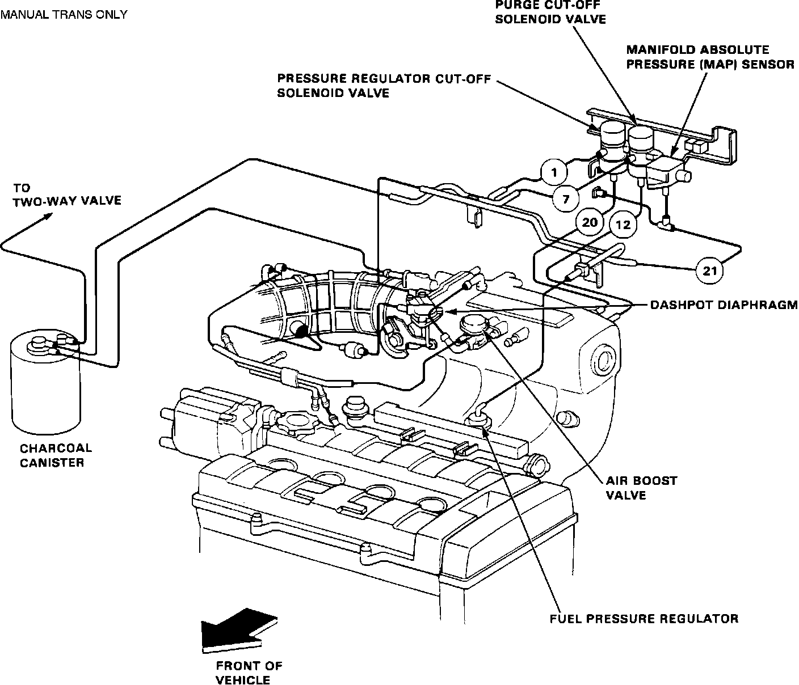
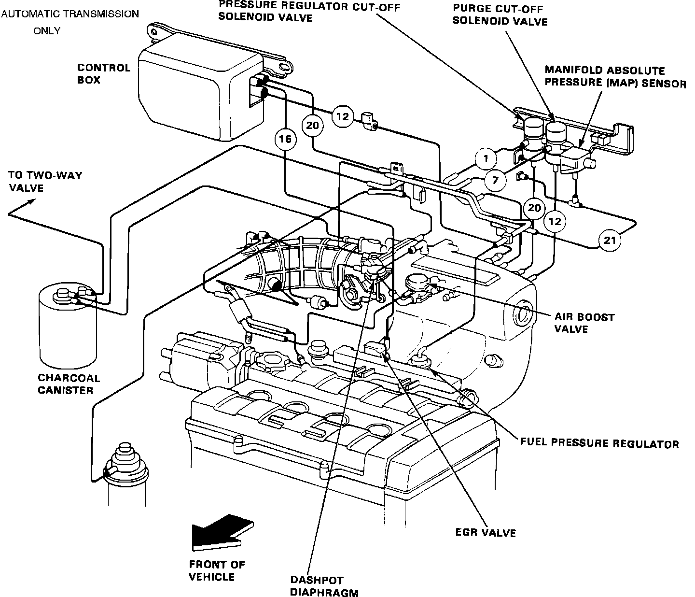
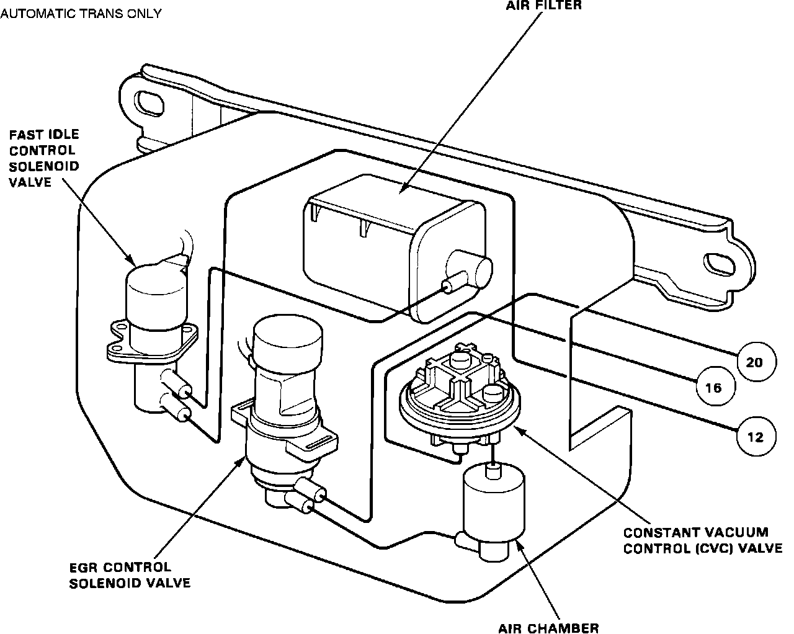

Evaporative Emission Control Canister
Vacuum Hose Diagram:

COMPLETE FUEL SYSTEM VACUUM SCHEMATIC
Manual Trans Vacuum Diagram:

MANUAL TRANS VACUUM DIAGRAM
Auto Trans Vacuum Diagram:

AUTOMATIC TRANS VACUUM DIAGRAM
Auto Trans Control Box Diagram:

CONTROL BOX VACUUM DIAGRAM (A/T ONLY)